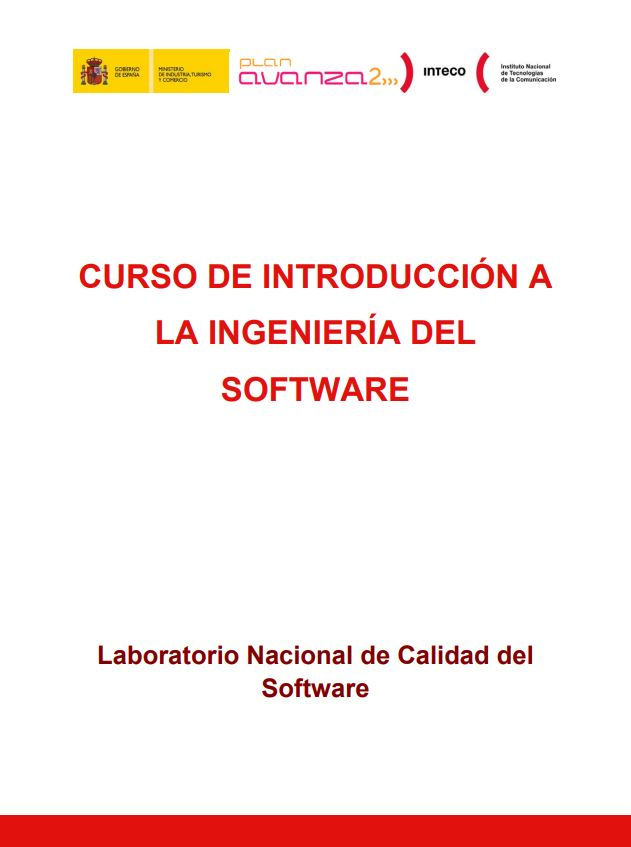

Los siete capítulos de este documento hace un recorrido de conceptos sobre Ingeniería de Software, Ciclo de vida de Software y las distintas metodologías de creación del Ciclo de Vida de Software.

Material Escrito
El 10% de código restante es para el otro 90% del tiempo de desarrollo” Tom Cargil

Curso a la introducción a la ingenieria del software

Desarrollo de software dirigido por modelos
Los Modelos de Desarrollo de Software nacen a partir de aplicar ciertas reglas de trabajo dentro del proceso de Creación de SOftware, planteándose el objetivo principal de disminuir costos en el proceso de Desarrollo, eso es lo que cuenta este interesante libro en sus casi 120 páginas.

Introducción a las metodologías agiles
Una de las ideas que en la actualidad mejor se habla acerca del Proceso de Desarrollo de Software es la llamada Metodología Ágil, lo cual persigue una manera rápida de sacar un producto al mercado, sin descuidar su calidad, por lo tanto, se trabaja de una manera más rápida, pero igual de profesional.
Libros adicionales para descargar
Curso de Desarrollo Agil
Método para el Desarrollo de Aplicaciones Móviles
Introducción a las Metodologías Ágiles